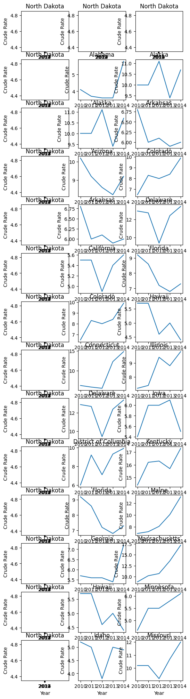

Project - Group 15#
Jennifer, Irene, Zac, Yi
Stat 159
import pandas as pd
import numpy as np
from matplotlib import pyplot as plt
import seaborn as sns
Data#
Import Datasets#
ToDo: Add descriptions for dataset source#
# Opioid Overdose Deaths
opioid = pd.read_csv('data/Multiple Cause of Death 1999-2014 v1.1.csv')
opioid
| State | Year | Deaths | Population | Crude Rate | Crude Rate Lower 95% Confidence Interval | Crude Rate Upper 95% Confidence Interval | Prescriptions Dispensed by US Retailers in that year (millions) | |
|---|---|---|---|---|---|---|---|---|
| 0 | Alabama | 1999 | 39 | 4430141 | 0.9 | 0.6 | 1.2 | 116 |
| 1 | Alabama | 2000 | 46 | 4447100 | 1 | 0.8 | 1.4 | 126 |
| 2 | Alabama | 2001 | 67 | 4467634 | 1.5 | 1.2 | 1.9 | 138 |
| 3 | Alabama | 2002 | 75 | 4480089 | 1.7 | 1.3 | 2.1 | 142 |
| 4 | Alabama | 2003 | 54 | 4503491 | 1.2 | 0.9 | 1.6 | 149 |
| ... | ... | ... | ... | ... | ... | ... | ... | ... |
| 811 | Wyoming | 2010 | 49 | 563626 | 8.7 | 6.4 | 11.5 | 210 |
| 812 | Wyoming | 2011 | 47 | 568158 | 8.3 | 6.1 | 11 | 219 |
| 813 | Wyoming | 2012 | 47 | 576412 | 8.2 | 6 | 10.8 | 217 |
| 814 | Wyoming | 2013 | 52 | 582658 | 8.9 | 6.7 | 11.7 | 207 |
| 815 | Wyoming | 2014 | 57 | 584153 | 9.8 | 7.4 | 12.6 | 196 |
816 rows × 8 columns
# gdp 2010-2022
gdp_annual = pd.read_csv('data/2010 to 2022 Gross Domestic Product_ All Industry Total by State (Millions of Dollars).csv')
gdp_annual = gdp_annual.reset_index()
gdp_annual.columns = gdp_annual.iloc[0]
gdp_annual = gdp_annual.tail(-1).reset_index(drop=True)
gdp_annual.head()
| Series ID | Region Name | Region Code | 2010-01-01 | 2011-01-01 | 2012-01-01 | 2013-01-01 | 2014-01-01 | 2015-01-01 | 2016-01-01 | 2017-01-01 | 2018-01-01 | 2019-01-01 | 2020-01-01 | 2021-01-01 | 2022-01-01 | |
|---|---|---|---|---|---|---|---|---|---|---|---|---|---|---|---|---|
| 0 | ALNQGSP | Alabama | 01 | 177249.15 | 183916.625 | 189245.525 | 194786.925 | 197406.85 | 202372.4 | 207368.375 | 214606.3 | 223859.325 | 231561.9 | 230892.05 | 254109.75 | 277817.475 |
| 1 | AKNQGSP | Alaska | 02 | 53331.6 | 56896.375 | 58283.65 | 57247.7 | 56484.95 | 51490.9 | 50727.65 | 53301.5 | 54899.6 | 54728.25 | 50475.2 | 57349.4 | 63617.975 |
| 2 | AZNQGSP | Arizona | 04 | 251153.05 | 260915.725 | 271440.025 | 278591.625 | 287666.65 | 299393.25 | 313081.375 | 332001.775 | 351879.5 | 372393.5 | 382072.275 | 420026.675 | 458949.775 |
| 3 | ARNQGSP | Arkansas | 05 | 101486.525 | 105768.1 | 108492.1 | 113227.325 | 116139.45 | 117786.775 | 119152.4 | 122466.725 | 127535.675 | 131578.25 | 133969.1 | 148676.1 | 165220.65 |
| 4 | CANQGSP | California | 06 | 1954092.7 | 2023500.05 | 2113096.45 | 2220389.875 | 2335286.5 | 2473555.875 | 2569634.025 | 2728743.075 | 2897200.65 | 3042694.075 | 3020173.35 | 3373240.675 | 3598102.75 |
Data Cleaning#
# drop rows with suppressed, unreliable, or na values
opioid = opioid[opioid['Deaths']!='Suppressed']
opioid = opioid[opioid['Crude Rate']!='Unreliable']
gdp_annual = gdp_annual.dropna()
Data Preprocessing#
ToDo: may turn this cell into reproducible tools#
# convert quantitative data to numeric data type
opioid['Deaths'] = pd.to_numeric(opioid['Deaths'])
opioid['Crude Rate'] = pd.to_numeric(opioid['Crude Rate'])
Data Engineering#
# select opioid data within 2010-2014 (range of gdp data)
df = opioid[(opioid['Year']<=2014) & (opioid['Year']>=2010)]
# group data by year and state; there's only
df = df.groupby(['Year', 'State']).mean()
df = df.reset_index()
df
/tmp/ipykernel_1772/3831921331.py:5: FutureWarning: The default value of numeric_only in DataFrameGroupBy.mean is deprecated. In a future version, numeric_only will default to False. Either specify numeric_only or select only columns which should be valid for the function.
df = df.groupby(['Year', 'State']).mean()
| Year | State | Deaths | Population | Crude Rate | Prescriptions Dispensed by US Retailers in that year (millions) | |
|---|---|---|---|---|---|---|
| 0 | 2010 | Alabama | 194.0 | 4779736.0 | 4.1 | 210.0 |
| 1 | 2010 | Alaska | 71.0 | 710231.0 | 10.0 | 210.0 |
| 2 | 2010 | Arizona | 650.0 | 6392017.0 | 10.2 | 210.0 |
| 3 | 2010 | Arkansas | 198.0 | 2915918.0 | 6.8 | 210.0 |
| 4 | 2010 | California | 2059.0 | 37253956.0 | 5.5 | 210.0 |
| ... | ... | ... | ... | ... | ... | ... |
| 246 | 2014 | Virginia | 775.0 | 8326289.0 | 9.3 | 196.0 |
| 247 | 2014 | Washington | 692.0 | 7061530.0 | 9.8 | 196.0 |
| 248 | 2014 | West Virginia | 585.0 | 1850326.0 | 31.6 | 196.0 |
| 249 | 2014 | Wisconsin | 640.0 | 5757564.0 | 11.1 | 196.0 |
| 250 | 2014 | Wyoming | 57.0 | 584153.0 | 9.8 | 196.0 |
251 rows × 6 columns
# join two datasets together based on year and state
#df.merge(gdp, left_index = True, right_on = ['Year'])
EDA#
fig, axs = plt.subplots(figsize=(6,25), nrows=14, ncols=3)
state_name = df['State'].unique()
for col in range(3):
for row in range(14):
sns.lineplot(data = df[df['State']==state_name[col*row-1]], x='Year', y='Crude Rate', ax = axs[row,col])
axs[row,col].set_xticks(range(2010, 2015))
axs[row,col].set_title(state_name[col*row-1])

sns.lineplot(data = df[df['State']=='Alabama'], x = 'Year', y = 'Deaths')
<AxesSubplot: xlabel='Year', ylabel='Deaths'>